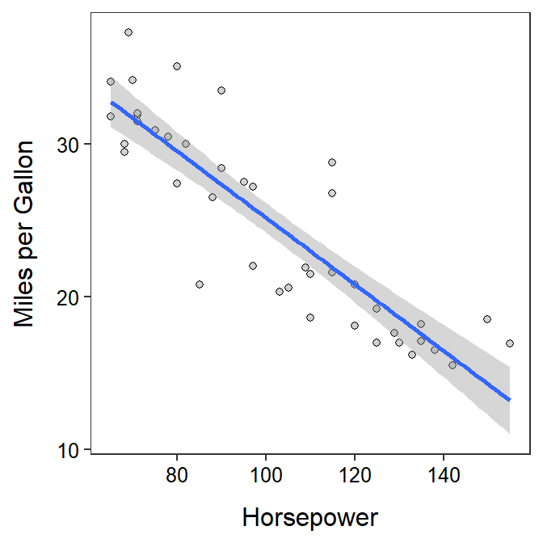

> br <- read.csv("BirthRatio.csv")lm.br <- lm(propmale~year,data=br)
cbind(Est=coef(lm.br),confint(lm.br)) Est 2.5 % 97.5 %
(Intercept) 6.200857e-01 5.811580e-01 6.590134e-01
year -5.428571e-05 -7.394606e-05 -3.462537e-05summary(lm.br)Coefficients:
Estimate Std. Error t value Pr(>|t|)
(Intercept) 6.201e-01 1.860e-02 33.340 < 2e-16
year -5.429e-05 9.393e-06 -5.779 1.44e-05
Residual standard error: 0.0002607 on 19 degrees of freedom
Multiple R-squared: 0.6374, Adjusted R-squared: 0.6183
F-statistic: 33.4 on 1 and 19 DF, p-value: 1.439e-05
wfc <- read.csv("https://raw.githubusercontent.com/droglenc/NCData/master/Flycatcher.csv")
lm.wfc <- lm(winglen~date,data=wfc)
cbind(Est=coef(lm.wfc),confint(lm.wfc)) Est 2.5 % 97.5 %
(Intercept) 91.0702393 68.6497096 113.490769073
date -0.1557607 -0.3072602 -0.004261186summary(lm.wfc)Coefficients:
Estimate Std. Error t value Pr(>|t|)
(Intercept) 91.07024 10.74829 8.473 4.75e-08
date -0.15576 0.07263 -2.145 0.0444
Residual standard error: 1.675 on 20 degrees of freedom
Multiple R-squared: 0.187, Adjusted R-squared: 0.1463
F-statistic: 4.599 on 1 and 20 DF, p-value: 0.04445 predict(lm.wfc,data.frame(date=160),interval="prediction") fit lwr upr
1 66.14853 62.13399 70.16307predict(lm.wfc,data.frame(date=160),interval="confidence") fit lwr upr
1 66.14853 64.17111 68.12595
gas <- read.csv("https://raw.githubusercontent.com/droglenc/NCData/master/CarMPG.csv")
lm.gas <- lm(mpg~hp,data=gas)
cbind(Est=coef(lm.gas),confint(lm.gas)) Est 2.5 % 97.5 %
(Intercept) 46.9265926 43.0424051 50.810780
hp -0.2176221 -0.2545932 -0.180651summary(lm.gas)Coefficients:
Estimate Std. Error t value Pr(>|t|)
(Intercept) 46.92659 1.92184 24.42 < 2e-16
hp -0.21762 0.01829 -11.90 1.03e-14
Residual standard error: 3.096 on 40 degrees of freedom
Multiple R-squared: 0.7796, Adjusted R-squared: 0.7741
F-statistic: 141.5 on 1 and 40 DF, p-value: 1.027e-14 predict(lm.gas,data.frame(hp=125),interval="prediction") fit lwr upr
1 19.72383 13.33395 26.11371predict(lm.gas,data.frame(hp=110),interval="confidence") fit lwr upr
1 22.98816 21.97567 24.00066predict(lm.gas,data.frame(hp=c(125,126)),interval="confidence") fit lwr upr
1 19.72383 18.43135 21.01631
2 19.50621 18.18886 20.82355ggplot(data=gas,mapping=aes(x=hp,y=mpg)) +
geom_point(pch=21,color="black",fill="lightgray") +
labs(x="Horsepower",y="Miles per Gallon") +
theme_NCStats() +
geom_smooth(method="lm")`geom_smooth()` using formula 'y ~ x'